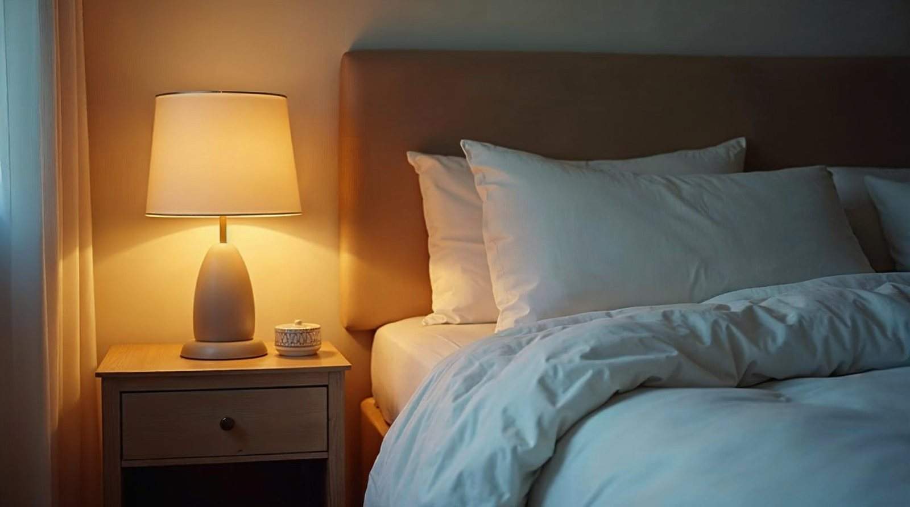
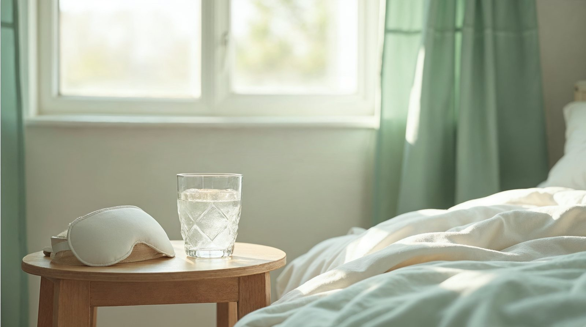
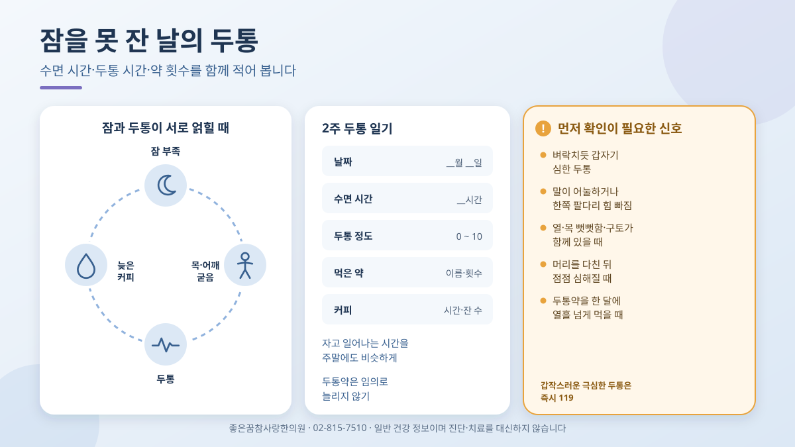

이종호 한의사 감수좋은꿈참사랑한의원 대표원장 (한의사 면허번호 19769)발행 2026-11-24 · 수정 2026-11-27
이 글의 차례
- 왜 이런 불편이 생길 수 있나요
- 왜 잠이 모자라면 머리부터 아플까요?
- 잠과 얽힌 두통은 어떤 모습으로 오나요?
- 주말에 몰아서 자면 두통이 덜할까요?
- 예를 들어 이런 경우가 있습니다
- 자주 하는 오해
- 먼저 이렇게 여쭙니다
- 스스로 점검해 보세요
- 일상에서 먼저 해 볼 수 있는 것
- 머리가 아픈 날 저녁은 이렇게 보내 보세요
- 커피는 언제까지, 어떻게 줄여 가면 좋을까요?
- 굳은 목과 어깨, 이렇게 풀어 보세요
- 베개와 침실도 두통과 이어져 있을까요?
- 한의원에서 함께 살필 수 있는 경우
- 처음 오시면 이런 순서로 살핍니다
- 얼마나 지켜보고 언제 상담할까요
- 이렇게 기록해 오시면 상담이 쉬워집니다
- 이런 증상은 먼저 확인이 필요합니다
- 관련 글
새벽 두 시가 넘어서야 겨우 잠이 들었는데 알람은 여섯 시 반에 울려요. 눈을 뜨자마자 관자놀이가 지끈거리고, 머리에 무거운 띠를 두른 것처럼 조여 옵니다. 출근길 지하철에서 커피를 들이켜고 진통제를 한 알 삼키며, 오늘은 일찍 자야지 다짐하지만 밤이 되면 또 잠이 오지 않죠.
잠과 두통은 서로 얽혀 있어요. 잠을 못 잔 다음 날 머리가 무겁고 뒷목이 뻐근하다가, 두통 때문에 또 잠을 설치는 일이 되풀이되기도 하거든요. 수면 시간과 두통이 나타나는 시간, 두통약을 먹는 횟수를 함께 기록해 보면 무엇부터 바꿀지 보이기 시작해요.
진료실에서 이런 얘기를 하시는 분들은 대개 두통 자체보다 이 고리를 끊지 못하는 데서 더 지쳐 계세요. 잠을 자야 머리가 덜 아플 텐데, 머리가 아파서 잠이 안 오니 어디서부터 손을 대야 할지 막막하다고요.
그 막막함, 원래 그래요. 둘이 서로 붙잡고 있으니 어느 한쪽만 붙들어서는 잘 안 풀리는 거예요. 그러니까 사실은 '두통을 없애는 것'과 '고리를 느슨하게 하는 것'을 나눠서 보시면 마음이 조금 편해져요.
저는 그 고리의 어느 지점이 가장 약한지를 함께 찾는 것부터 시작해요. 잠드는 시각일 수도 있고, 오후의 커피 한 잔이나 하루 종일 숙이고 있던 고개일 수도 있어요.
한 군데만 느슨해져도 고리 전체가 조금씩 풀리는 경우가 많아서, 가장 바꾸기 쉬운 곳부터 고릅니다.
왜 이런 불편이 생길 수 있나요
- 잠이 부족하거나 자는 시간이 들쭉날쭉하면 두통이 생기기 쉬운 것으로 알려져 있습니다.
- 잠을 설친 날은 목과 어깨 근육이 굳어 머리를 조이는 두통으로 이어질 수 있습니다.
- 커피로 졸음을 버티고 늦은 시간까지 마시면 다시 잠이 얕아지는 악순환이 생깁니다.
- 두통약을 너무 자주 먹으면 오히려 두통이 잦아질 수 있어 횟수를 확인합니다.
- 아침마다 두통이 있고 코를 크게 곤다면 수면무호흡을 확인할 필요가 있습니다.
왜 잠이 모자라면 머리부터 아플까요?
잠은 낮 동안 쓴 몸과 머리가 쉬어 가는 시간입니다. 이 시간이 짧아지거나 자주 끊기면, 통증을 느끼는 감각이 평소보다 예민해진다는 설명이 있습니다. 그래서 같은 정도의 긴장이나 피로도 잠이 부족한 날에는 두통으로 더 크게 느껴지기 쉽습니다.
여기에 자세가 더해집니다. 잠이 모자란 날은 몸이 무거워 고개가 앞으로 처지고, 어깨가 말린 채로 화면을 오래 보게 됩니다. 뒷목과 어깨 근육이 하루 종일 머리를 붙잡고 버티다 보면, 저녁 무렵 뒷머리와 이마까지 조여 오는 두통으로 이어지는 경우가 많습니다.
한의학에서는 잠을 낮에 흩어진 기운이 다시 안으로 모이는 시간으로 봅니다. 이 흐름이 흐트러지면 머리 쪽으로 열과 긴장이 몰려 무겁고 아프다고 설명하기도 합니다. 그래서 저는 두통만 따로 보지 않고 잠과 긴장, 소화를 함께 살핍니다.
잠과 얽힌 두통은 어떤 모습으로 오나요?
같은 '잠 때문에 오는 두통'이라도 모양이 조금씩 다릅니다. 어떤 모습에 가까운지 알면 무엇부터 바꿀지가 분명해집니다.
- 머리 전체나 뒷머리를 띠처럼 조이고, 뒷목이 함께 뻐근하다면 근육의 긴장이 큰 쪽을 먼저 봅니다.
- 한쪽 머리가 욱신거리고 빛과 소리가 거슬리며 속이 메스껍다면, 잠이 부족하거나 반대로 너무 많이 잔 날 심해지는지 살핍니다.
- 눈을 뜨자마자 머리가 아프다가 일어나 움직이면 차츰 가라앉고, 코골이가 심하다는 말을 듣는다면 밤사이 숨 쉬는 모습을 확인해 볼 필요가 있습니다.
- 주말 늦잠을 잔 날 오후에 머리가 아프다면, 평소 커피 마시는 시각이 밀린 것은 아닌지도 함께 봅니다.
- 두통약을 먹는 날이 점점 늘고 약효가 짧아진다고 느낀다면, 약 먹는 횟수부터 함께 정리합니다.
이 가운데 두세 가지가 겹치는 분도 많습니다. 어느 모습이 더 자주인지만 적어 오셔도 이야기가 훨씬 구체적이 됩니다.
주말에 몰아서 자면 두통이 덜할까요?
평일에 모자란 잠을 주말에 채우려고 낮까지 자는 분이 많습니다. 그런데 정오가 넘어 일어난 날 오히려 머리가 더 무겁다는 말씀도 자주 듣습니다. 잠의 양보다 리듬이 갑자기 바뀐 것, 그리고 아침에 마시던 커피가 몇 시간씩 늦어진 것이 겹쳤을 수 있습니다.
주말에도 일어나는 시각은 평일과 한 시간 안쪽으로 두고, 모자란 잠은 이른 오후에 20~30분 정도 짧게 눕는 식으로 나눠 채워 보세요. 커피를 마시는 분이라면 주말에도 평소와 비슷한 시각에 첫 잔을 드시는 것이 두통을 줄이는 데 도움이 될 수 있습니다.
예를 들어 이런 경우가 있습니다
- 예를 들어 야근이 몰린 주에 새벽 한두 시에 자고 아침 일곱 시에 일어나는 날이 이어지는 경우, 오후가 되면 뒷목부터 조여 오는지, 커피를 몇 잔째 마신 뒤에 두통이 시작되는지를 함께 따라가 봅니다.
- 예를 들어 아기를 돌보느라 밤에 두세 번씩 깨는 시기에 머리가 늘 묵직한 경우, 잠의 총량보다 이어서 자는 시간이 얼마나 되는지를 먼저 여쭙고, 가족과 나눌 수 있는 밤 시간을 함께 찾아봅니다.
- 예를 들어 시험을 앞두고 늦게까지 공부하며 에너지 음료로 버티다 두통약을 일주일에 서너 번 먹게 된 경우, 음료를 마시는 마지막 시각과 약 먹는 날을 달력에 표시해 흐름을 먼저 확인합니다.
자주 하는 오해
- 잠을 못 자서 아픈 것이니 참고 넘기면 된다고 여기기 쉽지만, 같은 흐름이 몇 주씩 이어지면 두통약에 기대는 날이 늘어 고리가 더 단단해질 수 있습니다.
- 두통이 오면 약을 일찍 먹어 두는 편이 좋다고 생각하는 분도 있지만, 먹는 날이 잦아지는지 함께 지켜봐야 합니다. 복용 횟수와 방법은 처방한 의사나 약사와 상의해 주세요.
- 잠은 많이 잘수록 두통에 좋다고 여기기 쉽지만, 평소보다 훨씬 오래 잔 날 오히려 머리가 무겁다는 분도 많아 양보다 일정한 리듬을 먼저 봅니다.

먼저 이렇게 여쭙니다
- 두통은 아침에 심한가요, 오후에 심한가요?
- 전날 몇 시간 주무셨나요? 잠이 부족한 날 두통이 심해지나요?
- 두통약을 한 달에 며칠 드시나요?
- 커피와 식사 시간은 어떤가요?
- 잠들기까지 얼마나 걸리고, 밤에 몇 번쯤 깨시나요?
- 하루에 고개를 숙이고 화면을 보는 시간은 어느 정도인가요?
스스로 점검해 보세요
- 잠이 6시간보다 짧았던 다음 날 두통이 오는 경우가 많다
- 평일과 주말의 일어나는 시각이 두 시간 넘게 차이 난다
- 오후 3시 이후에도 커피나 에너지 음료를 마신다
- 두통약을 먹는 날이 한 달에 열흘을 넘는다
- 아침에 일어나도 개운하지 않고 입이 마른다
- 코를 크게 곤다는 말을 들은 적이 있다
- 저녁이 되면 뒷목과 어깨가 돌처럼 굳어 있다
이 목록으로 두통의 원인을 가릴 수는 없습니다. 해당하는 항목을 적어 오시면 무엇부터 함께 살필지 정하는 데 참고가 됩니다.
일상에서 먼저 해 볼 수 있는 것
- 자고 일어나는 시간을 주말에도 비슷하게 맞추기
- 두통 일기(날짜, 수면 시간, 두통 정도, 먹은 약) 쓰기
- 오후 늦게는 커피 줄이기
- 목과 어깨를 천천히 풀어 주는 스트레칭
- 두통약은 임의로 늘리지 않기
머리가 아픈 날 저녁은 이렇게 보내 보세요
두통이 있는 날일수록 일찍 자고 싶지만, 머리가 아파 오히려 잠이 늦어지기도 합니다. 그런 날 저녁에는 할 일을 줄이고 몸을 쉬는 쪽으로 순서를 바꿔 보세요.
- 저녁 식사는 거르지 말고 가볍게 드신 뒤 물을 몇 잔 나누어 마십니다.
- 따뜻한 물로 샤워하며 뒷목과 어깨를 충분히 데웁니다.
- 잠들기 한 시간 전부터는 조명을 낮추고 화면 밝기도 줄입니다.
- 누워서 어깨를 바닥 쪽으로 내리고, 턱을 살짝 당긴 채 내쉬는 숨을 길게 이어 봅니다.
낮에 머리가 무겁다고 오후 늦게 한두 시간씩 낮잠을 자면 그날 밤 잠이 다시 밀리기 쉽습니다. 졸음이 심하면 이른 오후에 짧게만 쉬어 보세요.
커피는 언제까지, 어떻게 줄여 가면 좋을까요?
잠이 모자란 날 커피는 고마운 존재입니다. 문제는 오후 서너 시에 마신 한 잔이 밤까지 남아 잠을 얕게 하고, 그 다음 날 또 커피를 찾게 되는 흐름입니다. 커피가 몸에 머무는 시간은 사람마다 차이가 커서, 오후 한 잔에도 밤잠이 흔들리는 분이 있습니다.
그렇다고 하루아침에 끊으면 오히려 머리가 지끈거리고 멍한 날이 며칠 이어지기도 합니다. 저는 마지막 잔의 시각을 한 시간씩 앞당기는 것부터 권합니다. 예를 들어 오후 네 시에 마시던 잔을 세 시로, 다음 주에는 두 시로 옮겨 보는 식입니다.
양을 줄일 때도 한 잔을 통째로 빼기보다 반 잔으로 줄이거나, 연하게 타는 쪽이 몸이 받아들이기 쉽습니다. 에너지 음료와 진한 녹차, 콜라에도 카페인이 들어 있으니 하루 동안 마신 것을 함께 세어 보세요.
굳은 목과 어깨, 이렇게 풀어 보세요
잠이 모자란 날 두통이 뒷목에서 시작된다면, 낮 동안 목과 어깨를 틈틈이 풀어 주는 것만으로도 저녁의 무게가 달라질 수 있습니다. 한 시간에 한 번쯤 자리에서 일어나 아래 동작 가운데 두세 가지를 해 보세요.
- 턱을 살짝 당겨 뒷목을 길게 늘인 채 열을 셉니다.
- 귀를 어깨 쪽으로 천천히 기울여 반대쪽 목 옆을 늘리고, 양쪽을 번갈아 합니다.
- 양어깨를 귀 쪽으로 끌어올렸다가 숨을 내쉬며 툭 떨어뜨립니다.
- 두 손을 깍지 껴 머리 뒤에 대고 팔꿈치를 옆으로 벌리며 가슴을 엽니다.
동작은 통증이 심해지지 않는 범위에서 천천히 합니다. 모니터를 눈높이에 가깝게 올리고, 휴대전화는 눈앞으로 들어 보는 습관을 들이면 고개가 앞으로 빠지는 시간이 줄어듭니다.
베개와 침실도 두통과 이어져 있을까요?
자고 일어났는데 뒷목이 뻣뻣하고 머리가 무겁다면 베개 높이를 한번 살펴보세요. 너무 높으면 밤새 고개가 앞으로 꺾이고, 너무 낮으면 목이 뒤로 젖혀져 목 근육이 쉬지 못합니다. 바로 누웠을 때 이마와 턱이 거의 수평이 되고, 옆으로 누웠을 때 코끝이 몸의 가운데 선에 오는 정도를 기준으로 삼아 보세요.
침실은 어둡고 조용하며 조금 서늘한 편이 잠들기에 좋다고 알려져 있습니다. 휴대전화는 침대 밖에서 충전하고, 밤에 깼을 때 시계를 확인하지 않도록 시계 방향을 돌려 두는 것도 작은 도움이 됩니다. 난방이 센 겨울에는 실내가 건조해 아침에 입이 마르고 머리가 무겁다는 분도 있어 습도도 함께 봅니다.
한의원에서 함께 살필 수 있는 경우
- 잠을 설친 다음 날 머리가 무겁고 뒷목이 뻐근한 경우 수면과 긴장을 함께 살핍니다.
- 목과 어깨가 뭉쳐서 두통이 오는 경우 근육의 긴장과 자세를 함께 살핍니다.
- 스트레스가 많은 날 두통이 반복되는 경우 생활 리듬과 긴장을 함께 살핍니다.
좋은꿈참사랑한의원에서는 모든 분의 맥을 먼저 짚고, 두통 일기와 잠 이야기를 들은 뒤 필요하다고 판단될 때 설진과 목·어깨의 긴장을 살핍니다. 그 뒤 잠의 리듬을 되찾는 계획과 침·약침·추나·한약 상담 등을 상태에 맞춰 정하며, 수면무호흡이 의심되면 수면 검사가 가능한 의료기관을 안내합니다.
처음 오시면 이런 순서로 살핍니다
첫 방문에서는 모든 분께 그렇듯 맥을 먼저 짚고, 두통이 언제부터 시작됐는지, 하루 중 어느 때 심한지, 잠이 부족한 날과 얼마나 겹치는지를 여쭙습니다. 필요하다고 판단되면 혀를 보고 목과 어깨가 얼마나 굳어 있는지 손으로 확인합니다.
드시는 두통약과 수면제, 다른 약이 있다면 이름과 먹는 횟수를 알려 주세요. 처방받은 약을 임의로 끊으시라고 말씀드리지 않으며, 한약 상담을 하게 되면 지금 드시는 약을 먼저 확인한 뒤 정합니다.
마지막으로 오늘 진행할 내용과 그 이유를 설명드리고, 잠자리 시각과 커피 시각처럼 집에서 먼저 바꿔 볼 순서를 한두 가지로 좁혀 정합니다. 다음 진료에서는 그사이 두통이 있었던 날과 잠이 어땠는지부터 이어서 여쭙습니다.
얼마나 지켜보고 언제 상담할까요
- 일어나는 시각을 맞추고 오후 커피를 줄이는 것을 2주 정도 이어 가며 두통 일기를 써 봅니다.
- 2~3주가 지나도 두통이 일주일에 두세 번 넘게 이어지거나, 두통약을 먹는 날이 줄지 않는다면 상담을 받아 보세요.
- 예전과 두통의 모양이 달라졌거나 점점 잦아지고 강해진다면, 신경과 같은 의과 진료로 원인을 먼저 확인해 보시길 권합니다.

이렇게 기록해 오시면 상담이 쉬워집니다
- 2주 동안의 두통 일기(시간, 정도, 먹은 약)
- 잠든 시각과 일어난 시각
- 커피 마신 시간과 양
- 코골이 여부(가족에게 물어보기)
두통 정도는 0에서 10까지 숫자로 적으면 충분해요. 휴대전화 메모에 "새벽 1시 취침·7시 기상 / 오후 4시 두통 6 / 진통제 1알 / 커피 3잔"처럼 한 줄씩 남겨 두시면, 잠이 짧았던 날과 두통이 겹치는 흐름이 스스로도 보이기 시작해요.
머리가 아픈 채로 하루를 버티는 일은 생각보다 많은 힘을 써요. 그걸 매일 해 오셨으니 지치시는 게 당연합니다.
굳은 목과 어깨, 흔들린 리듬을 살피는 건 저한테 맡겨 주세요. 하실 일은 하나면 돼요. 잠자리에 누우면 휴대폰은 손이 닿지 않는 곳에 두세요. 커피도, 일하는 시간도 지금은 그대로 두셔도 괜찮아요.
한 번에 다 바꾸지 않으셔도 돼요. 휴대폰을 다시 집어 든 밤이 있어도 괜찮아요. 다음 날 밤에 다시 내려놓으면 되는 거예요.
오시면 지난 두 주 동안 잠이 짧았던 날 머리가 어땠는지, 일기를 같이 펼쳐 놓고 볼게요. 궁금한 건 그냥 편하게 물어보세요.
이런 증상은 먼저 확인이 필요합니다
- 갑자기 벼락치듯 심한 두통이 온 경우
- 말이 어눌해지거나, 시야가 갑자기 흐려지거나, 한쪽 팔다리에 힘이 빠지는 경우
이런 신호가 있으면 한의원보다 가까운 병원이나 응급실을 먼저 찾으세요.
관련 글
- 스트레스를 받으면 뒷목이 당기고 머리가 아픈 긴장성 두통은 어떻게 살피나요?
- 두통약을 자주 먹을수록 두통이 더 잦아지는 약물과용 두통은 어떻게 살피나요?
- 아침에 눈뜨자마자 머리가 지끈거리는 기상 두통은 무엇 때문이고 어떻게 살피나요?

여쭙는 것
- 두통은 아침에 심한가요, 오후에 심한가요?
- 전날 몇 시간 주무셨나요? 잠이 부족한 날 두통이 심해지나요?
- 두통약을 한 달에 며칠 드시나요?
생활에서 해 볼 것
- 자고 일어나는 시간을 주말에도 비슷하게 맞추기
- 두통 일기(날짜, 수면 시간, 두통 정도, 먹은 약) 쓰기
- 오후 늦게는 커피 줄이기
한의원에서 함께 살필 것
- 잠을 설친 다음 날 머리가 무겁고 뒷목이 뻐근한 경우 수면과 긴장을 함께 살핍니다.
- 목과 어깨가 뭉쳐서 두통이 오는 경우 근육의 긴장과 자세를 함께 살핍니다.
- 스트레스가 많은 날 두통이 반복되는 경우 생활 리듬과 긴장을 함께 살핍니다.
먼저 확인이 필요한 신호
- 갑자기 벼락치듯 심한 두통이 온 경우
- 말이 어눌해지거나, 시야가 갑자기 흐려지거나, 한쪽 팔다리에 힘이 빠지는 경우
한눈에 보는 표
| 구분 | 핵심 |
|---|---|
| 여쭙는 것 | 두통은 아침에 심한가요, 오후에 심한가요? 전날 몇 시간 주무셨나요? 잠이 부족한 날 두통이 심해지나요? |
| 생활에서 해 볼 것 | 자고 일어나는 시간을 주말에도 비슷하게 맞추기 두통 일기(날짜, 수면 시간, 두통 정도, 먹은 약) 쓰기 |
| 한의원에서 함께 살필 것 | 잠을 설친 다음 날 머리가 무겁고 뒷목이 뻐근한 경우 수면과 긴장을 함께 살핍니다. 목과 어깨가 뭉쳐서 두통이 오는 경우 근육의 긴장과 자세를 함께 살핍니다. |
| 먼저 확인이 필요한 신호 | 갑자기 벼락치듯 심한 두통이 온 경우 말이 어눌해지거나, 시야가 갑자기 흐려지거나, 한쪽 팔다리에 힘이 빠지는 경우 |
자주 묻는 질문
잠이 부족하면 왜 두통이 오나요?
잠 부족과 목·어깨 긴장, 카페인 등 여러 요인이 겹쳐서 생길 수 있어 수면과 두통의 시간대를 함께 살핍니다.
두통약을 오래 먹어도 되나요?
한 달에 열흘 넘게 먹는다면 의사나 약사와 상의하세요. 처방받은 약은 임의로 늘리거나 끊지 마세요.
한의원에서는 어떻게 살피나요?
잠과 두통의 기록, 목과 어깨의 긴장을 함께 묻고 생활 전체의 리듬 속에서 살핍니다.
낮잠을 자면 두통이 덜해지나요?
이른 오후에 20~30분 정도 짧게 쉬는 것은 도움이 될 수 있지만, 늦은 오후의 긴 낮잠은 그날 밤 잠을 밀어낼 수 있어 시간과 길이를 정해 두기를 권합니다.
좋은꿈참사랑한의원은 재진 때 지난번 이야기부터 이어서 여쭙니다. 진료시간과 예약은 오시는 길에서 확인하세요.
어디서 상담받을 수 있나요?
좋은꿈참사랑한의원은 서울 동작구 만양로2길 2 신성빌딩 3층·5층(서울 동작구 상도동, 7호선 상도역 3번 출구 근처)에 있습니다. 한의사 3명(이종호 대표원장, 조영기 수석진료원장, 정원영 진료원장)이 진료합니다. 진료시간은 평일 09:30~20:00(점심 13:00~14:00), 토·일·공휴일 09:30~15:00이며, 방문 전 전화로 확인을 권합니다. 예약은 네이버 예약, 카카오톡 상담, 전화 02-815-7510로 받습니다.
이 글은 일반적인 건강 정보이며 개인의 진단이나 치료를 대신하지 않습니다. 증상이 있거나 복용 중인 약이 있다면 진료를 통해 확인하세요. 치료 효과는 개인마다 다를 수 있습니다.
작성 기준: 일반적으로 알려져 있는 건강 정보를 참고해 정리했습니다(대표원장 감수). 증상 기록은 1~2주 동안 하루 1회, 비슷한 시간에 적어 오시면 지난 상태와 비교하기 쉽습니다.